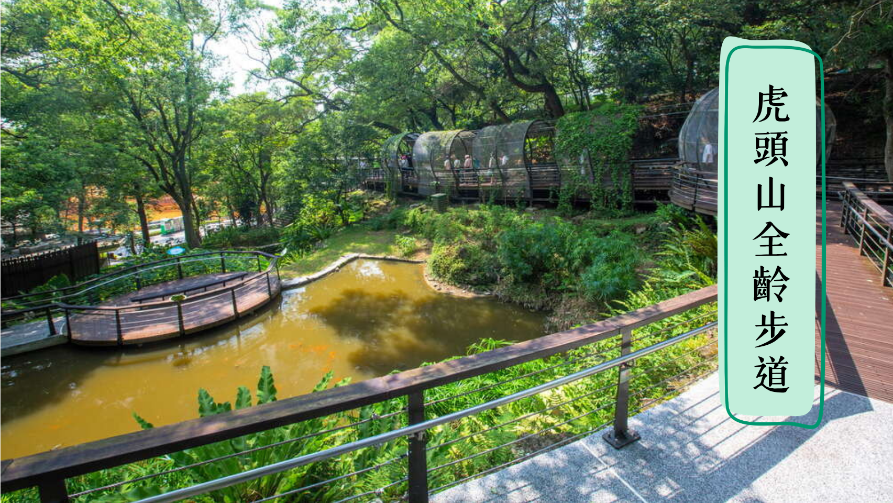

【銀髮族 / 桃喜人生慢活遊湖小吃一日遊】湖光山色人情味X 慢活愜意品小吃




跟團解放身心 盡享專業規劃
出門旅遊總是想東想西，本該放鬆身心的輕旅行卻變成心力交瘁的負擔嗎？別擔心，交給漫跋旅遊。包車服務與行程安排，不再忍受交通壅塞與麻煩的安排。
樂齡設計 放慢腳步感受桃園
漫跋旅遊提供了輪椅租借服務，同時在景點安排上也加入桃園縣政府策畫的無障礙設施景點，不會進行大量的移動。無論何時疲累想休息，我們也安排了足夠的時間彈性，拒絕一般旅行社常有的時間壓力。
優質服務 親切有活力
活潑的工作人員、攝影小天使將伴隨全程，並且只要報名後保證成團，不管是與好友一同出遊或是一個人想出門交新朋友，我們的行程都能夠給你最優質的享受。
費用說明與注意事項
- 選擇團體出行造訪各景點能避開大眾運輸的誤點與擁擠，參加漫拔旅遊才是首選！
- 專業小天使全程伴隨協助拍照，人與美景一同入鏡。
- 輪椅租借服務 (如有需求請另外詢問)。
- 免費提供礦泉水、濕紙巾。
- 賞花屬季節性活動，如遇天候因素淍謝或未盛開，仍會前往原景點純欣賞， 請記得深呼吸感受自然美景。
- 部份店鋪可能遇公休日，敬請見諒。
- 活潑工作人員將伴隨全程 歡聲笑語不間斷。
- 基本保險費。
時間行程表
09:00
中壢出發
從中壢火車站搭車，前往石門水庫（約45分鐘車程）。
09:45
石門水庫
巴士直接開往壩頂。長輩可在壩頂平坦路段散步、眺望湖景，或在綠地小坐。不安排爬樓梯行程。
11:30
月眉人工濕地
巴士開往濕地停車場。悠閒漫步落羽松大道。地勢平坦。
13:00
大溪老街 (午餐)
餐後可視情況預留時間讓長輩在「大溪武德殿」或「中正公園」的大樹下乘涼休憩。
15:00
虎頭山公園
全齡友善步道緩慢步行。這條木棧步道坡度極緩，且沿途有許多長椅。長輩可以走一段、坐一段，呼吸森林芬多精，避開爬坡
17:15
桃園觀光夜市
剛開攤時段抵達。此時攤位剛擺好，人潮最稀疏，不必與人推擠，更容易在攤位找到座位坐下用餐。
18:30
回程
從桃園區返回中壢火車站。
景點詳細介紹 (點擊卡片查看)
石門水庫 遊湖賞景
四季美景不間斷，山櫻、流蘇花、阿勃勒、秋楓及寒梅，賞花賞景、走……
月眉人工濕地 歐式落羽松秘境
月眉人工濕地最著名的就是300多株的落羽松，優美的落羽松祕境串……
大溪老街 人文小吃群英薈萃
日治大正時代正流行巴洛克的建築風格，各個商號結合了閩南的傳統圖……
虎頭山公園 桃園市的後花園
虎頭山公園是專為全年齡設計的城市綠肺，特別規劃了全臺最長的「全……
桃園觀光夜市 小吃的交響樂
桃園夜市承載了數十年的飲食文化，許多老店依舊堅持傳統工序，特別……
注意事項與退費規範
【報名與成行規範】
- 本行程為私人客製化頂級包車服務，保證 2 人即可成行。為維持服務品質，每日接待組數有限，請於預定出發日前至少 7 個工作日完成線上預訂申請。
- 1-4 人將安排 7 座頂級商務車 (Toyota Alphard 等同級車款)；5-6 人將升等為 9 座豪華客車。考量長輩與孩童安全，車內皆可免費標配最高規格兒童安全座椅與基礎醫療急救箱。
- 為確保旅遊平安險生效，請於預訂確認後，如實提供所有同行旅客之正確中文姓名、身分證字號與出生年月日。
【集合接送與行程異動】
- 專車到府接駁時間與地點，將由專屬管家於出發前 2 日以電子郵件及通訊軟體再次向您確認。
- 請於指定時間提前 10 分鐘於接送地點候車。若因旅客個人因素遲到導致行程延誤或無法成行，將視為自動放棄，恕不退費。
- 行程內所標示之景點順序與停留時間，將視當日交通狀況與人潮進行彈性調整。若遇景點因天候或突發狀況臨時休園，金牌管家將於徵求旅客同意後，安排同等級之替代方案。
【取消與退費政策】
本行程之取消規定，除享有專案提供之「72小時前免費取消」禮遇外，其餘皆嚴格遵守交通部觀光署《國內旅遊定型化契約應記載及不得記載事項》第十一條辦理：
- 旅客於出發日前第 3 日 (72小時) 以前取消，全額退費（無須扣除任何手續費）。
- 旅客於出發日前第 1 日至第 2 日內通知取消，收取旅遊費用 30% 作為補償營業與行政損失。
- 旅客於出發當日取消、集合逾時或未通知不參加者，收取旅遊費用 100% 賠償。